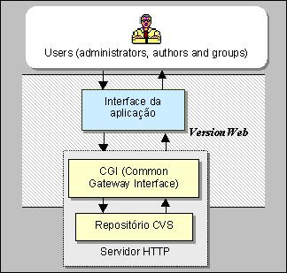
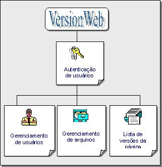

VersionWeb: A Tool for
Helping Web Page Version Control
Date: Saturday, October 12,
2002
Topic: Web
Development
Dilvan
de Abreu Moreira
Introducing, an easy-to-use tool for
keeping track of web page versions.
Information evolves rapidly on the World Wide Web. Because
this, browser users often are surprised when previously
available information is no longer available. To solve this
problem, we created a software tool named VersionWeb that
makes web page version control available during browsing.
The creation of web applications can be seen as a new kind
of software development. Many software companies gradually are
starting to adopt Software Configuration Management (SCM) as a
usual tool for software development. Changes are required
throughout all lifecycles of a system. During the development
of large-scale software, uncontrolled modifications occur and
can lead to chaos. Thus, change-management procedures must be
carried out to ensure that costs and benefits are analyzed and
changes are controlled. Developers of web pages (authors or
webmasters) face hard work when many people are involved in
the parallel development of sets of related pages. Because
authors work independently on their individual copies, the
integration of the copies in a final hyperdocument (merging
two or more versions to generate another) becomes a complicate
issue. In addition, the volume of documents involved usually
is high, so modifications in these documents happen fast and
are difficult to track. In fact, to provide an efficient
mechanism to control change, we should combine human
procedures with automatic tools like SCCS or RCS.
VersionWeb provides webmasters an easy way of controlling
web page versions, through the Web itself. Additionally,
during web browsing, users are able to recover previously
available information from the web page, visualize the
differences between different versions of the page and to
notified when new versions become available. Another objective
of the tool is to facilitate the cooperation among authors,
allowing them to have simultaneous access to the files, manage
the different versions of a file and locate changes that have
been made.
Architecture of VersionWeb
To provide its main functional features, VersionWeb
encapsulates CVS (Concurrent Version System), an efficient
file version control system. CVS allows simultaneous access to
a file. Access can be made through the Internet, and it is
possible to visualize the differences between two file
versions (except for binary files). CVS can run under several
operating systems.
VersionWeb complements CVS by providing a web-based
interface for friendlier interaction, because CVS has only a
command-oriented interface. To make a CVS repository available
through the Web, it has to be located in the same server as
the web server for security reasons. According to this
approach (shown in Figure 1), its functional components
(Application Interface and CGI Script) work as follows:
- Users web browsing from anywhere on the Internet
interact with CVS through the VersionWeb Application
Interface and submit requests to the web server (in general,
encapsulating CVS commands).
- A CGI script (physically located on the WWW server)
receives and identifies the requests from the users.
- The CGI script that received the request makes a call to
the CVS to pass it the command to be run.
- The CVS runs the command and returns the results to the
CGI script.
- The CGI script sends the results to the user by creating
an HTML page using the request results.

Figure 1. Basic Architecture of VersionWeb
As shown in Figure 1, the CGI Scripts and CVS repository
are located physically in the same computer that hosts the WWW
server. We use CGI scripts because they require simplified
programming. Furthermore, the web user, running from a client
browser, does not have to install the CVS software in his or
her local machine to run VersionWeb.
All tasks are run in the server. Because CVS itself
controls the concurrent access to the files, there is no
missing information or redundancy. To run VersionWeb, the user
needs only a browser.
The VersionWeb Tool
The web-based interface of VersionWeb was developed to
facilitate user interaction with CVS. Because CVS has only a
command-oriented interface, many developers have avoided using
it. The modular structure of VersionWeb is shown in Figure 2.

Figure 2. VersionWeb Modules
VersionWeb has three main interfaces to support the three
different roles of its users: general users (specific groups
of browsing users), administrators and authors. After passing
through the VersionWeb authentication module, the user has
access to one of the three basics interfaces of VersionWeb
according to his or her role.
Figure 3. User Authentication
General User
If the user has been authenticated as a general user
(belonging to a specific group), he has access to the
interface shown in Figure 4. This type of interface, for
general users, is accessible through the page in which the
user is browsing.
Figure 4. Main Interface for Browser Users
This interface has a link to some modules of the tool,
which are responsible for showing links to all the page's
versions and to the following options:
- Retrieve any version of the page.
- See the differences between page versions.
- Notify of newly available versions.
- Send criticisms or suggestions to authors related to the
page.
Authors
If the user has been authenticated as an author, he has
access to the interface shown in Figure 5, which shows the CVS
repository content requested during user authentication.
Figure 5. File Management in VersionWeb
This interface offers the basics options to manipulate
files and directories and to access CVS operations like:
- List Directory: lists the contents of a directory.
- Up Level: goes up one level in the directory tree.
- Rename: renames a directory or file.
- Delete: removes a directory or file.
- Remote Checkout: makes a remote checkout of the current
file version (in the server side). This option must be used
when doing small changes in text files for immediate
commitment. The file content is edited in a browser window.
- Local Checkout: makes a local checkout of a selected
file current version. This operation lists a directory of
files in a new browser window for downloading.
- Versions History: shows the history log of all versions
of a file.
- Versions List: opens a new window with all versions and
branches of a file with remote and local checkout operations
for each version.
- Diffs: allows the author to visualize the differences in
content between two versions of a file.
- Create directory: creates one directory inside the CVS
repository.
- Add file: uploads a file to the CVS repository.
- Commit of a local checkout: makes the commit of changed
files from a local checkout.
One important VersionWeb feature is to show visually the
differences between two versions of one file with colors, as
shown in Figure 6.
Figure 6. Visualization of Differences between Two
Versions of One HTML Page
Administrators
If the user has been authenticated as an administrator, he
has access to the interface shown in Figure 7 and can manage
all other VersionWeb users.
Figure 7. Management of Users
This interface offers the following options for management:
- Insert: inserts one user in the list of general users,
authors or administrators.
- Change: changes data of an user.
- Delete: removes a user from the list.
- Transfer: moves a user from one list to another.
Installation
Installing VersionWeb is simple. The user needs to have
installed CVS (version 1.10 or higher) for Linux, compile the
VersionWeb source files and create a CVS repository.
VersionWeb is available for download at versionweb.sourceforge.net. Included in the
downloaded material are a command file for compilation (using
gcc), an install file and a user manual.
Resources
Where to find the CVS: http://www.cvshome.org/
Where to find the VersionWeb: versionweb.sourceforge.net
Information about us: AgentsResearch.com
| {kind=link}
{kind=link}
{kind=link}
{kind=link}
{kind=link}